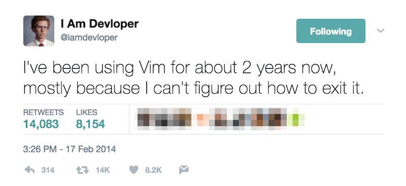

Why Emacs?
Table of Contents
My Story
Traditional Editors
Keybind overload
Obviously, I started with simple keybindings. Of course the first, like most, even before I got into development was Ctrl/Command+C an Ctrl/Command+V. But through the course of editing, I realized that there's a lot more I wanted to do e.g., selecting a single word. So I learned the Option/Control+Direction keys.
As time went on, I was using the arrow keys in conjunction with Shift and Ctrl/Command to navigate the code performing various operations. It was very liberating. As a natural sort of progression, any time when I had to move my hand off the keyboard in order to do very standard text editing motions. A few examples that come to mind are:
- Selecting a whole line.
- Selecting inside a set of double/single quotes.
- Highlighting whole code blocks
So I would try to find work-arounds for these various things. e.g. Ctrl/Command+Left to go to the beginning of the line then Shift+Ctrl/Command+Right to highlight to the end of the line. And I never found quite the optimal solutions for many of these issues.
This, however, just made my hand movement problem worse! Eventually, I wanted a keyboard-centric solution for everything. So I would make keybindings in my VS Code's keybindings.json that tried to account for everything I wanted to do. I made keybindings for:
- Debugging operations
- step forward
- step into
- step out
- set breakpoint
- continue
- end
- Source Control
- next hunk
- previous hunk
- stage hunk
- commit what's staged and push
- Terminal operations
- Open/Close integrated terminal
- Create new terminal
- Navigate to specific terminal running specific process
With VS Code, some of these things were not possible, but the ones that were possible were all ended up using some sort of Ctrl/Shift/Alt/Option/Command key chords and frequent use of the arrow keys. Eventually I was looking at the keybindings and I would have to internally argue with myself when I was overriding the standard keybindings. "Is this useful? Should I remap this? Will I remember this? Is this intuitive? etc." And this was already on top of the fact that it still felt like a break in my workflow to always move my hands down to the Ctrl/Shift/Alt/Option/Command and arrow keys. It was as much of a break in my workflow as moving to the mouse, but it was still rather uncomfortable.
What I needed, but didn't know I needed at the time was modes…
Vim
Vim is a modal text editor. That means that the keyboard has different functions based on different conditions. Everyone already has experience with modal text editing and just don't recognize it as such. Specifically, holding the Shift key or pressing the caps lock key enters what I'll call "Uppercase Mode". In this mode, every key serves a different function than it did when we're not in it. i.e. Every key is in uppercase! For an introduction to vim, type vimtutor into the command line (assuming you have vim installed in your system which Windows/Mac and many linux distros have installed out of the box).
Vim has 4 modes:
- Normal (Default mode. For editing text in)
- Insert (for adding new text to the document)
- Visual (for selecting text)
- Command (for telling vim to perform certain functions)
My first experience with vim, like I assume most people, is that I got defaulted into it in the terminal to deal with something that needed to be resolved via text editing. Naturally, I had no idea what to do and I remember asking my teachers at bootcamp to help figure out what was going on as I couldn't do anything.

I don't remember how exactly I got interested in vim, but I immediately wanted to learn it the moment I understood what it was. Being interested in programming, I of course end up getting recommended programming related content on YouTube. I'm sure vim content was in some of those recommendations. And some specific YouTubers which helped me take that leap were:
- Distrotube
- Luke Smith
- Chris@Machine
- ThePrimeagen
Vim is also extensible. Like VS Code in this way, you can install or create add ons in order to add functionality to the editor. I tried to get vim functioning the same way VS Code does, but there were many ways I found it difficult or broke my vim configuration several times, but I couldn't get rid of the modal editing. It changed my life for the better and I never wanted to go back. So what I settled for is vim emulation in VS Code… Of course… this didn't scratch all the itches.
Emacs
Emacs has a multitude of awesome features that make it appealing to me.
Org Mode!
Export
Org mode is what I used to create this blog/presentation.
Org babel
Org babel allows you to execute programming languages in line! Here's an example with python.
print("Hello", end="")
Hello
You can also take these results… and use them in other programming languages! take a look at what we got from the python execution and use it in Javascript.
console.log(x + " world")
Hello world
Then inside bash…
echo $pyjs from the terminal
Hello world from the terminal
Or Haskell…
print (sh ++ " or haskell or whatever.")
Hello world from the terminal or haskell or whatever.
Even Java.
System.out.println(hs + " I guess java can be here too.");
Hello world from the terminal or haskell or whatever. I guess java can be here too.